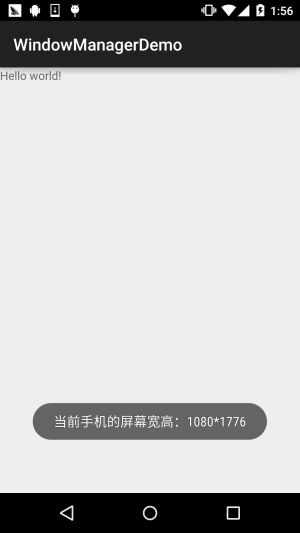
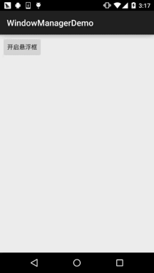

一、本节引言：
本节给大家带来的Android给我们提供的系统服务中的——WindowManager(窗口管理服务)， 它是显示View的最底层，Toast，Activity，Dialog的底层都用到了这个WindowManager， 他是全局的！该类的核心无非：调用addView，removeView，updateViewLayout这几个方法 来显示View以及通过WindowManager.LayoutParams这个API来设置相关的属性！
本节我们就来探讨下这个WindowManager在实际开发中的一些应用实例吧~
官方API文档：WindowManager
二、WindowManager的一些概念：
1）WindowManager介绍
Android为我们提供的用于与窗口管理器进行交互的一个API！我们都知道App的界面都是 由一个个的Acitivty组成，而Activity又由View组成，当我们想显示一个界面的时候， 第一时间想起的是:Activity，对吧？又或者是Dialog和Toast。
但是有些情况下，前面这三者可能满足不了我们的需求，比如我们仅仅是一个简单的显示 用Activity显得有点多余了，而Dialog又需要Context对象，Toast又不可以点击... 对于以上的情况我们可以利用WindowManager这个东东添加View到屏幕上， 或者从屏幕上移除View！他就是管理Android窗口机制的一个接口，显示View的最底层！
2）如何获得WindowManager实例
①获得WindowManager对象:
WindowManager wManager = getApplicationContext().getSystemService(Context. WINDOW_ SERVICE);
②获得WindowManager.LayoutParams对象，为后续操作做准备
WindowManager.LayoutParams wmParams=new WindowManager.LayoutParams();
三、WindowManager使用实例：
实例1：获取屏幕宽高
在Android 4.2前我们可以用下述方法获得屏幕宽高：
public static int[] getScreenHW(Context context) {
WindowManager manager = (WindowManager)context
.getSystemService(Context.WINDOW_SERVICE);
Display display = manager.getDefaultDisplay();
int width = display.getWidth();
int height = display.getHeight();
int[] HW = new int[] { width, height };
return HW;
}
而上述的方法在Android 4.2以后就过时了，我们可以用另一种方法获得屏幕宽高：
public static int[] getScreenHW2(Context context) {
WindowManager manager = (WindowManager) context.
getSystemService(Context.WINDOW_SERVICE);
DisplayMetrics dm = new DisplayMetrics();
manager.getDefaultDisplay().getMetrics(dm);
int width = dm.widthPixels;
int height = dm.heightPixels;
int[] HW = new int[] { width, height };
return HW;
}
然后我们可以再另外写两个获取宽以及高的方法，这里以第二种获得屏幕宽高为例：
public static int getScreenW(Context context) {
return getScreenHW2(context)[0];
}
public static int getScreenH(Context context) {
return getScreenHW2(context)[1];
}
当然，假如你不另外写一个工具类的话，你可以直接直接获取，比如：
public class MainActivity extends AppCompatActivity {
@Override
protected void onCreate(Bundle savedInstanceState) {
super.onCreate(savedInstanceState);
setContentView(R.layout.activity_main);
WindowManager wManager = (WindowManager) getSystemService(Context.WINDOW_SERVICE);
DisplayMetrics dm = new DisplayMetrics();
wManager.getDefaultDisplay().getMetrics(dm);
Toast.makeText(MainActivity.this, "当前手机的屏幕宽高：" + dm.widthPixels + "*" +
dm.heightPixels, Toast.LENGTH_SHORT).show();
}
}
运行结果：

实例2：设置窗口全屏显示
getWindow().setFlags(WindowManager.LayoutParams.FLAG_FULLSCREEN,
WindowManager.LayoutParams.FLAG_FULLSCREEN);
getSupportActionBar().hide();
运行结果：
实例3：保持屏幕常亮
public void setKeepScreenOn(Activity activity,boolean keepScreenOn) {
if(keepScreenOn)
{
activity.getWindow().addFlags(WindowManager.LayoutParams.FLAG_KEEP_SCREEN_ON);
}else{
activity.getWindow().clearFlags(WindowManager.LayoutParams.FLAG_KEEP_SCREEN_ON);
}
}
实例4：简单悬浮框的实现
运行效果图：

实现代码：
首先我们需要一个后台的Service在后台等待我们的操作，比如完成悬浮框的绘制移除等， 于是乎我们定义一个Service：MyService.java： 我们需要一个创建悬浮框View的一个方法：
private void createWindowView() {
btnView = new Button(getApplicationContext());
btnView.setBackgroundResource(R.mipmap.ic_launcher);
windowManager = (WindowManager) getApplicationContext()
.getSystemService(Context.WINDOW_SERVICE);
params = new WindowManager.LayoutParams();
// 设置Window Type
params.type = WindowManager.LayoutParams.TYPE_SYSTEM_ALERT;
// 设置悬浮框不可触摸
params.flags = WindowManager.LayoutParams.FLAG_NOT_TOUCH_MODAL
| WindowManager.LayoutParams.FLAG_NOT_FOCUSABLE;
// 悬浮窗不可触摸，不接受任何事件,同时不影响后面的事件响应
params.format = PixelFormat.RGBA_8888;
// 设置悬浮框的宽高
params.width = 200;
params.height = 200;
params.gravity = Gravity.LEFT;
params.x = 200;
params.y = 000;
// 设置悬浮框的Touch监听
btnView.setOnTouchListener(new View.OnTouchListener() {
//保存悬浮框最后位置的变量
int lastX, lastY;
int paramX, paramY;
@Override
public boolean onTouch(View v, MotionEvent event) {
switch (event.getAction()) {
case MotionEvent.ACTION_DOWN:
lastX = (int) event.getRawX();
lastY = (int) event.getRawY();
paramX = params.x;
paramY = params.y;
break;
case MotionEvent.ACTION_MOVE:
int dx = (int) event.getRawX() - lastX;
int dy = (int) event.getRawY() - lastY;
params.x = paramX + dx;
params.y = paramY + dy;
// 更新悬浮窗位置
windowManager.updateViewLayout(btnView, params);
break;
}
return true;
}
});
windowManager.addView(btnView, params);
isAdded = true;
}
然后我们只需在OnCreate( )方法中调用上述的createWindowView( )方法即可启动加载悬浮框， 但是我们发现了一点：这玩意貌似关不掉啊，卧槽，好吧，接下来我们就要分析下需求了!
当处于手机的普通界面，即桌面的时候，这玩意才显示，而当我们启动其他App时，这个悬浮框应该 消失不见,当我们推出app又回到桌面,这个悬浮框又要重新出现!
那么我们首先需要判断App是否位于桌面，于是乎我们再加上下述代码：
/**
* 判断当前界面是否是桌面
*/
public boolean isHome(){
if(mActivityManager == null) {
mActivityManager = (ActivityManager)getSystemService(Context.ACTIVITY_SERVICE);
}
List<RunningTaskInfo> rti = mActivityManager.getRunningTasks(1);
return homeList.contains(rti.get(0).topActivity.getPackageName());
}
/**
* 获得属于桌面的应用的应用包名称
* @return 返回包含所有包名的字符串列表
*/
private List<String> getHomes() {
List<String> names = new ArrayList<String>();
PackageManager packageManager = this.getPackageManager();
// 属性
Intent intent = new Intent(Intent.ACTION_MAIN);
intent.addCategory(Intent.CATEGORY_HOME);
List<ResolveInfo> resolveInfo = packageManager.queryIntentActivities(intent,
PackageManager.MATCH_DEFAULT_ONLY);
for(ResolveInfo ri : resolveInfo) {
names.add(ri.activityInfo.packageName);
}
return names;
}
好了,接下来我们需要每隔一段时间来进行一系列的判断，比如：是否在桌面，是否已加载悬浮框， 否则加载；否则，如果加载了,就将这个悬浮框移除!这里我们使用handler~,因为不能在子线程直接 更新UI，所以，你懂的，所以我们自己写一个handler来完成上述的操作:
//定义一个更新界面的Handler
private Handler mHandler = new Handler() {
@Override
public void handleMessage(Message msg) {
switch(msg.what) {
case HANDLE_CHECK_ACTIVITY:
if(isHome()) {
if(!isAdded) {
windowManager.addView(btnView, params);
isAdded = true;
new Thread(new Runnable() {
public void run() {
for(int i=0;i<10;i++){
try {
Thread.sleep(1000);
} catch (InterruptedException e) {e.printStackTrace();}
Message m = new Message();
m.what=2;
mHandler.sendMessage(m);
}
}
}).start();}
} else {
if(isAdded) {
windowManager.removeView(btnView);
isAdded = false;
}
}
mHandler.sendEmptyMessageDelayed(HANDLE_CHECK_ACTIVITY, 0);
break;
}
}
};
最后要做的一件事,就是重写Service的onStartCommand( )方法了,就是做判断,取出Intent中的 数据,判断是需要添加悬浮框,还是要移除悬浮框!
@Override
public int onStartCommand(Intent intent, int flags, int startId) {
int operation = intent.getIntExtra(OPERATION, OPERATION_SHOW);
switch(operation) {
case OPERATION_SHOW:
mHandler.removeMessages(HANDLE_CHECK_ACTIVITY);
mHandler.sendEmptyMessage(HANDLE_CHECK_ACTIVITY);
break;
case OPERATION_HIDE:
mHandler.removeMessages(HANDLE_CHECK_ACTIVITY);
break;
}
return super.onStartCommand(intent, flags, startId);
}
好的，至此，主要的工作就完成了，接下来就是一些零碎的东西了，用一个Activity 来启动这个Service：MainActivity.java：
public class MainActivity extends AppCompatActivity implements View.OnClickListener {
private Button btn_on;
@Override
protected void onCreate(Bundle savedInstanceState) {
super.onCreate(savedInstanceState);
setContentView(R.layout.activity_main);
bindViews();
}
private void bindViews() {
btn_on = (Button) findViewById(R.id.btn_on);
btn_on.setOnClickListener(this);
}
@Override
public void onClick(View v) {
switch (v.getId()) {
case R.id.btn_on:
Intent mIntent = new Intent(MainActivity.this, MainService.class);
mIntent.putExtra(MainService.OPERATION, MainService.OPERATION_SHOW);
startService(mIntent);
Toast.makeText(MainActivity.this, "悬浮框已开启~", Toast.LENGTH_SHORT).show();
break;
}
}
}
接着AndroidManifest.xml加上权限，以及为MainService进行注册：
<uses-permission android:name="android.permission.SYSTEM_ALERT_WINDOW" />
<uses-permission android:name="android.permission.GET_TASKS" />
<service android:name=".MainService"/>
好了，逻辑还是比较容易理解的~大家自己再看看吧~
四、文献扩展：
从第四个实例中，你可能留意到了：WindowManager.LayoutParams这个东东，这是一个标记， 比如全屏~时间关系就不一一列举出来了，可以到官网或者下述链接中查看：
官方文档：WindowManager.LayoutParams
另外，假如你对上述的悬浮框有兴趣，想更深入的研究，可见郭大叔(郭霖)的博客：
Android桌面悬浮窗效果实现，仿360手机卫士悬浮窗效果
五、本节代码示例下载：
六、本节小结：
本节我们对Android系统服务中的WindowManager进行了学习，前面三个实例可能 实际开发中会用得多一点，建议将第一个示例写成一个工具类，毕竟屏幕宽高用得 蛮多的~至于悬浮框那个能看懂就看懂，没看懂耶没什么~实际开发很少叫你弄个 悬浮框吧...嗯，好的，本节就到这里，谢谢~